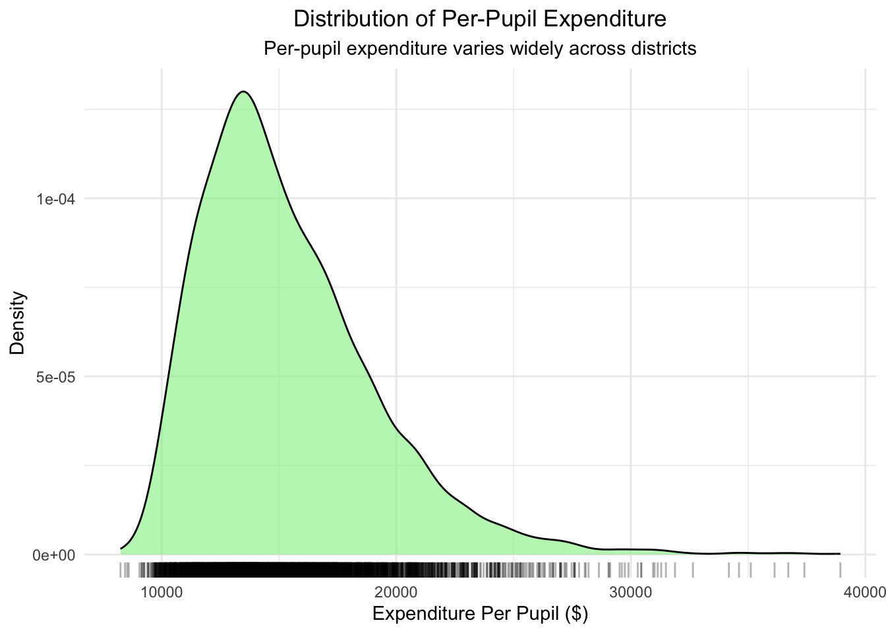

Analysis
This page presents an in-depth statistical exploration of graduation outcomes across Massachusetts school districts.

1. Motivation and Research Question
Massachusetts consistently ranks among the top states in educational performance. However, excellence in averages can mask disparities across districts. This analysis investigates how resources (expenditure) and structural factors (race, income, academic background) interact to influence graduation outcomes.
Guiding question:
How do funding and structural inequalities together shape graduation outcomes across school districts?
2. General Information Analysis
We use district-level data from 2006–2013, including:
- Total Expenditures Per Pupil
- Graduation Rates
- Demographics
- Socioeconomic Indicators (Low Income Percentage)
- Academic Preparedness (SAT Scores)
- Student-Teacher Ratio
3. Initial Exploratory Analysis
3.1 Distribution of Graduation Rates
3.2 Distribution of Per-Pupil Expenditure

3.3 Racial Composition Across Districts

4. Regression Analysis
We estimate three types of linear models to investigate the relationship between spending and graduation rates:
- Simple linear regression
- Multiple linear regression
- Log-log regression
4.1 Simple Linear Regression: Spending vs Graduation
| term | estimate | std.error | statistic | p.value |
|---|---|---|---|---|
| (Intercept) | 87.8329 | 0.5214 | 168.4560 | 0 |
| Total_Expenditures_Per_Pupil | 0.0002 | 0.0000 | 6.9988 | 0 |
- A $10,000 increase in spending is associated with a 2.3 percentage point increase in graduation rates.
- However, this model explains only about 1.3% of the variance (very low R-squared), indicating that spending alone cannot account for differences in graduation rates.
`geom_smooth()` using formula = 'y ~ x'
4.2 Multiple Linear Regression: Adding Controls
| term | estimate | std.error | statistic | p.value |
|---|---|---|---|---|
| (Intercept) | 85.5807 | 1.5843 | 54.0173 | 0e+00 |
| Total_Expenditures_Per_Pupil | 0.0003 | 0.0000 | 14.1711 | 0e+00 |
| Percent_White | -0.1057 | 0.0263 | -4.0124 | 1e-04 |
| Percent_Black | -0.1781 | 0.0284 | -6.2634 | 0e+00 |
| Percent_Hispanic | -0.1954 | 0.0262 | -7.4527 | 0e+00 |
| Percent_Asian | -0.1207 | 0.0307 | -3.9308 | 1e-04 |
| Percent_Female | 0.1719 | 0.0494 | 3.4791 | 5e-04 |
| Student_Teacher_Ratio | 0.4627 | 0.0404 | 11.4514 | 0e+00 |
| Low_Income_Percent | -0.2275 | 0.0060 | -37.8863 | 0e+00 |
| SAT_Reading_Writing_Mean_Score | -0.0015 | 0.0004 | -4.2336 | 0e+00 |
| SAT_Math_Mean_Score | 0.0118 | 0.0016 | 7.2490 | 0e+00 |
- After controlling for race, income, academic preparedness, and class size, model fit improves dramatically (R² ~ 67%).
- Racial composition, income, and SAT scores are strong additional predictors.
4.3 Log-Log Regression: Elasticity Interpretation
| term | estimate | std.error | statistic | p.value |
|---|---|---|---|---|
| (Intercept) | 3.8236 | 0.0523 | 73.1776 | 0.0000 |
| log_expenditure | 0.0707 | 0.0049 | 14.5087 | 0.0000 |
| Percent_White | -0.0010 | 0.0003 | -2.9558 | 0.0031 |
| Percent_Black | -0.0018 | 0.0004 | -5.0211 | 0.0000 |
| Percent_Hispanic | -0.0024 | 0.0003 | -7.2911 | 0.0000 |
| Percent_Asian | -0.0012 | 0.0004 | -3.0346 | 0.0024 |
| Percent_Female | 0.0015 | 0.0006 | 2.4172 | 0.0157 |
| Student_Teacher_Ratio | 0.0053 | 0.0005 | 10.4364 | 0.0000 |
| Low_Income_Percent | -0.0025 | 0.0001 | -33.8049 | 0.0000 |
| SAT_Reading_Writing_Mean_Score | 0.0000 | 0.0000 | -3.8114 | 0.0001 |
| SAT_Math_Mean_Score | 0.0001 | 0.0000 | 6.7773 | 0.0000 |
- Results are consistent.
- Interpretation: A 1% increase in spending predicts a small % increase in graduation rates.
4.4 Model Comparison
| Model | R_Squared | Adjusted_R_Squared | AIC | BIC | RMSE |
|---|---|---|---|---|---|
| Simple Regression | 0.0134 | 0.0132 | 24666.39 | 24684.95 | 7.4273 |
| Multiple Regression | 0.6695 | 0.6686 | 20746.25 | 20820.52 | 4.2989 |
| Log-Log Regression | 0.6455 | 0.6446 | -10788.04 | -10713.78 | 0.0539 |
-The three models differ substantially in their explanatory power and efficiency:
Simple Linear Regression: This model shows a very low R-squared (~1.3%), indicating that per-pupil expenditure alone explains very little of the variation in graduation rates. While the coefficient is statistically significant, the model’s predictive ability is poor.
Multiple Linear Regression: After adding controls for race, income, SAT scores, and other district characteristics, the R-squared increases substantially (~67%). This suggests that educational outcomes are driven by a broader range of factors beyond spending. However, the increase in model complexity must be weighed against the risk of overfitting.
Log-Log Regression: The log-log model achieves a slightly lower R-squared (~64%) compared to the multiple linear model but still captures a strong relationship. Log-transforming the data stabilizes variance and reduces the influence of extreme values. Additionally, interpreting elasticities (percentage changes) can provide more policy-relevant insights.
Comparing AIC and BIC values also favors the multiple linear model, indicating a better fit with reasonable complexity. RMSE is lowest for the multiple regression, confirming better predictive accuracy.
In short, while simple models highlight basic associations, richer models reveal that multiple factors — especially demographics and socioeconomic status — jointly shape graduation outcomes.
5. Subgroup Analysis: Racial Composition
To explore if the relationship between funding and outcomes differs across racial groups, we estimated models separately by majority racial composition.
| majority_race | term | estimate | std.error | statistic | p.value |
|---|---|---|---|---|---|
| Majority White | (Intercept) | 87.7644 | 0.4540 | 193.3087 | 0.0000 |
| Majority White | Total_Expenditures_Per_Pupil | 0.0003 | 0.0000 | 9.9448 | 0.0000 |
| Majority Black | (Intercept) | 68.4919 | 4.1853 | 16.3647 | 0.0000 |
| Majority Black | Total_Expenditures_Per_Pupil | 0.0006 | 0.0002 | 2.6199 | 0.0125 |
| Majority Hispanic | (Intercept) | 53.1564 | 4.4174 | 12.0333 | 0.0000 |
| Majority Hispanic | Total_Expenditures_Per_Pupil | 0.0014 | 0.0003 | 5.3280 | 0.0000 |
Key Findings:
- Majority Hispanic districts: Strongest positive relationship between spending and graduation.
- Majority Black districts: Moderate positive relationship.
- Majority White districts: Positive but smaller magnitude.
➔ Targeted funding could have greater returns in historically underserved communities.
5. Limitations
- Causality: Observational data limits causal inference.
- Omitted Variables: Factors like school leadership and parental involvement are not included.
- Measurement Error: Graduation rates and expenditures may be reported with inaccuracies.
- Cross-Sectional Data: No dynamic effects are captured.
6. Conclusion
Spending is positively associated with graduation outcomes, with stronger effects in minority-majority districts. However, many factors beyond funding shape educational success. Future research should adopt causal designs and investigate targeted interventions.